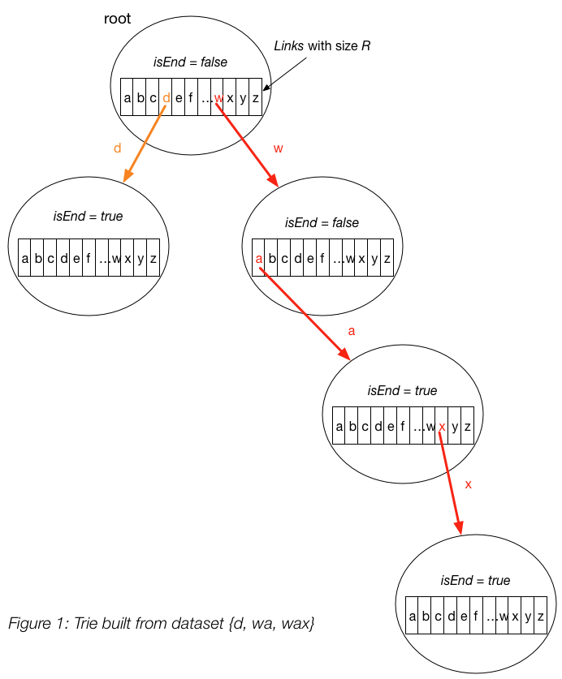

Trie
Trie is a classic data structure (Idreos et al., 2018) that is widely used in key-value store (Zhang et al., 2018; Wu et al., 2015). In this post, we describe the basics about the data structure.
Motivation
The main motivation for using trie is that we want to efficiently search for a word in a dataset of strings. We can use hash table or balanced trees for this task. However, trie has its unique advantages:
VS. Hash Table:
-
Hash table has \(O(1)\) time complexity for looking up a key but it is not efficient for the operations:
- Finding all keys with a common prefix. We have to traverse all keys in hash table, which can be \(O(n)\) (\(n\) is the number of keys inserted). However, trie takes \(O(k)\) (\(k\) is the length of the prefix).
- Enumerating a dataset of strings in lexicographical order. There is a sorting on all strings (i.e. keys) and thus \(O(n\log n)\). However, trie takes \(O(n)\) time only.
-
Search in hash table can be \(O(n)\) if there are plenty of hash collisions. However, trie only takes \(O(m)\) (\(m\) is the key length)
-
Compared to hash table, trie saves space when storing many keys with the same prefix.
VS. balanced trees:
- Search in balanced tree can take \(O(m \log n)\) time. However, trie only takes \(O(m)\).
Data Structure
To avoid unnecessary complexity, we assume we are working with a collection of strings which consist of only lower case alphabetics.

-
A trie node contains two fields:
- An array of \(R\) links (
links), with each link representing one letter. A link connects two trie nodes together. In our example, we have \(R = 26\). - A boolean variable
isEnd, which indicates whether we reach the end of a string. This is needed because if we are searching for a prefix, we should haveisEnd = false. On the other hand, if we reach the end of a string, we haveisEnd = true.
- An array of \(R\) links (
Note
Please note that isEnd = true doesn't indicate that we are at leaf node of the trie. The boolean only indicates
whether we have reached the end of some string. In Figure 1, the end nodes of "wa" and "wax" are connected with each other.
If we require that there is no common prefix for the string (e.g. strings in the dataset don't share the common prefix),
we then don't need isEnd boolean variable.
-
Insert a key into trie:
-
We insert a key by searching into the trie. We start from the root and search a link, which corresponds to the first key character. There are two cases :
- A link exists. Then we move down the tree following the link to the next child level. The algorithm continues with searching for the next key character.
- A link does not exist. Then we create a new node and link it with the parent's link matching the current key character. We repeat this step until we encounter the last character of the key, then we mark the current node as an end node and the algorithm finishes.
-
Time complexity: \(O(m)\) (In each iteration of the algorithm, we either examine or create a node in the trie till we reach the end of the key. This takes only \(m\) operations.)
-
Space complexity: \(O(m)\) (In the worst case newly inserted key doesn't share a prefix with the the keys already inserted in the trie. We have to add \(m\) new nodes, which takes us \(O(m)\) space.)
-
-
Search for a key in a trie:
-
Each key is represented in the trie as a path from the root to the internal node or leaf. We start from the root with the first key character. We examine the current node for a link corresponding to the key character. There are two cases:
- A link exist. We move to the next node in the path following this link, and proceed searching for the next key character.
-
A link does not exist. If there are no available key characters and current node is marked as
isEnd = truewe returntrue. Otherwise there are possible two cases in each of them we returnfalse:- There are key characters left, but it is impossible to follow the key path in the trie, and the key is missing.
- No key characters left, but current node is not marked as
isEnd. Therefore the search key is only a prefix of another key in the trie.
-
Time complexity: \(O(m)\) (In each step of the algorithm we search for the next key character. In the worst case the algorithm performs \(m\) operations.)
-
Space complexity: \(O(1)\)
-
-
Search for a key prefix in a trie:
The approach is very similar to the one we used for searching a key in a trie. We traverse the trie from the root, till there are no characters left in key prefix or it is impossible to continue the path in the trie with the current key character. The only difference with the mentioned above search for a key algorithm is that when we come to an end of the key prefix, we always return true. We don't need to consider the
isEndmark of the current trie node, because we are searching for a prefix of a key, not for a whole key.-
Time complexity: \(O(m)\)
-
Space complexity: \(O(1)\)
-
Implementation
We implement the trie data structure in C++ here.
Applications
Trie is useful when we want to search some string based on the character appearance of the characters within the string:
- Autocomplete
- Spell checker
- IP routing (Longest prefix matching
- T9 predictive text
- Solving Boggle
- Huffman Codes (\(\S\)10.1.2 in MAW(cpp))
Note
We use a sequence of 1 and 0 to represent character in Huffman Codes. Thus, \(R = 2\) (e.g. 1 and 0). However, to figure out the 0-1 encoding of each character, we cannot simply insert the character into trie. We should use Huffman algorithm instead.
Reference
Stratos Idreos, Kostas Zoumpatianos, Brian Hentschel, Michael S Kester, and Demi Guo. The data calculator: data structure design and cost synthesis from first principles and learned cost models. In Proceedings of the 2018 International Conference on Management of Data, 535–550. ACM, 2018. ↩
Xingbo Wu, Yuehai Xu, Zili Shao, and Song Jiang. Lsm-trie: an lsm-tree-based ultra-large key-value store for small data. In Proceedings of the 2015 USENIX Conference on Usenix Annual Technical Conference, 71–82. USENIX Association, 2015. ↩
Huanchen Zhang, Hyeontaek Lim, Viktor Leis, David G Andersen, Michael Kaminsky, Kimberly Keeton, and Andrew Pavlo. Surf: practical range query filtering with fast succinct tries. In Proceedings of the 2018 International Conference on Management of Data, 323–336. ACM, 2018. ↩